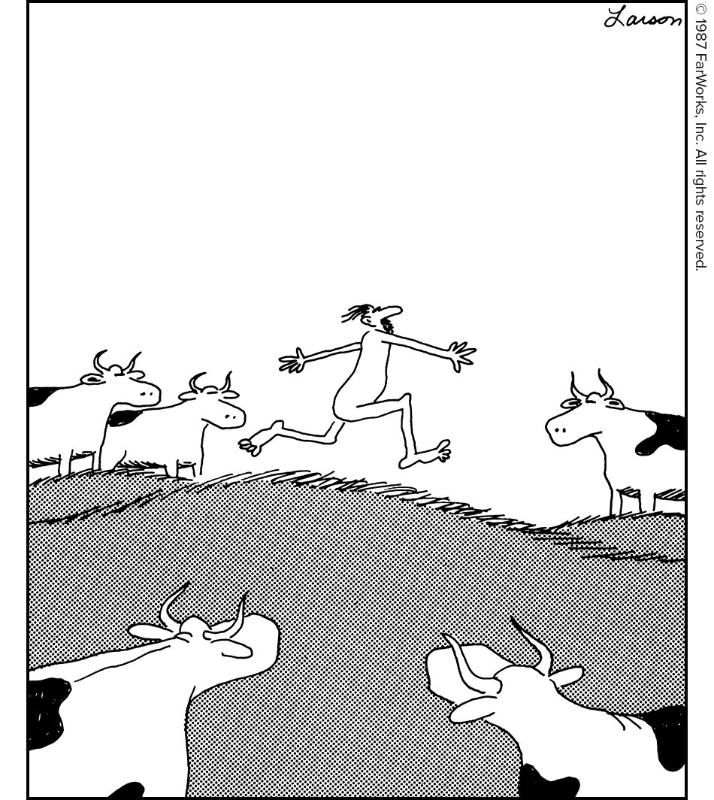

Your Daily Computer Brief
🔴 ALERT
You're browsing a site and a "Verify you're human" box pops up. It looks like a normal CAPTCHA — checkbox, maybe a puzzle. You click it. Then a message says "Press Win+R, then Ctrl+V, then Enter to verify." **Stop.** That's not a CAPTCHA. It's **ClickFix** — a scam that tricks you into pasting a hidden malicious command into Windows Run dialog. The command downloads and installs malware. No antivirus catches it because *you* ran the command. **What to do:** Close the browser tab immediately. Never press Win+R, Ctrl+V, or open PowerShell/Command Prompt because a webpage told you to. Real CAPTCHAs never ask you to run commands. **Why it matters:** This bypasses all your security. The malware steals passwords, bank logins, and can lock your files for ransom. Microsoft, Google, and Cloudflare never ask you to run commands to "verify." *Source: NCSC (Swiss Cyber Security Centre) Week 8 2026 Report; Malwarebytes Threat Intel July 2026; Microsoft Security Blog*
Today in Tech
- Windows 11 August 2026 update (KB5101684) arrives August 11 — lets you uninstall the built-in Image Generation AI model for the first time, adds Windows Hello support for external fingerprint readers, and new touchpad gestures. (Source: gHacks Tech News, July 29, 2026)
- Lake City broadband reality check: only 1.9% of addresses have fiber; 68.8% cable; 43.6% DSL; satellite covers 100%. Xfinity and AT&T Fiber are the fiber providers. (Source: BroadbandNow, July 2026)
- AI has crossed from "attacker's assistant" to "attacker" — Check Point's 2026 AI Security Report shows AI now *runs* cyber campaigns autonomously, not just helping humans write phishing emails. (Source: Check Point Research, 2026 Annual Report)
Daily Tip
Leave your computer on for weeks and it gets sluggish — memory leaks, stuck background processes, updates that never finish installing. A full restart (not sleep, not hibernate) clears all that. Click Start → Power → Restart. Do it Friday afternoon so Monday starts fresh. Your computer will boot faster and programs will respond snappier.
😄 COMEDY BREAK
